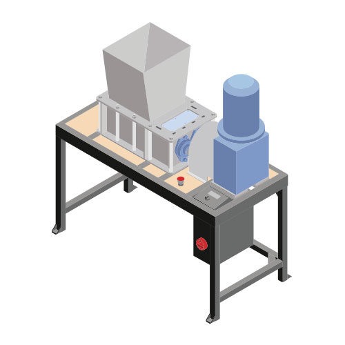

Build a Shredder Pro
シュレッダープロを作ろう
プラスチックをシュレッダーにかけたい？クールだ！私たちは2種類のシュレッダーを持っています：オリジナルの小型シュレッダーとシュレッダー・プロ。これはプロで、小型のものよりも頑丈で、高度で、生産的ですが、組み立てもより複雑です。しかし、機械の組み立てに慣れている人なら、とても簡単に作ることができるし、バザーで部品を買うこともできる。機械全体でもいい！自分で売ることもできる。シュレッダーは実際、世界中で最もリクエストの多いマシンだ！
ヒント：シュレッダー・プロを作るには、通常のシュレッダーよりも少し高度な道具と技術が必要だ。道具自体はまだ比較的基本的な技術で、世界中どこでも手に入る。しかし、公差は確実に厳しくなる。そのため、自分の道具とスキルがこの仕事に適していることを確認する必要がある。
必要な機械と技術
| Build Shredder Pro | Machines needed | Skills needed |
|---|---|---|
|  | - Lathe - Drill press - Milling machine - Welding machine (not specific) - Torq wrench - M16 hand tap | - Welding (intermediate) - Machining (expert) - Assembling (expert) - Electronics (expert) |
材料と部品
パーツを作ったり買ったりする必要があります。ダウンロードキットの中に部品表があります。これはシュレッダープロ全体のリストです。以下では、あなたが購入する必要がある市販の部品を見つけることができます。
モーターオプションと説明
プラスチックを細断するエネルギーはすべて電動モーターから供給される。より多くのエネルギーは、より多くの生産性とより小さなフレークを意味します。ダブルシャフトシュレッダーは低速、高トルクで動作するため、モーターはこれらの要件を満たす必要があります。 三相ギヤード・モーターを選ぶには、以下の点をチェックする必要がある：
- 公称出力
- 出力速度
- トルク
- サービス係数
公称出力
公称電力は、公称電流に直結した値です。ほとんどのモーターでは、この電力で連続運転することができます（安全係数、周囲温度、湿度などによって異なります）。 しかし、短時間であれば、モーターは大電流を流すことで、より高いパワーを発揮することができます。これは通常、回転開始時や、より硬い細断物に遭遇したときに見られます。 しかし、モーターがより高い出力で作動できるものであれば、これはモーターを損傷させることになる。 どのモーターも公称電流/パワーの1.6倍以上で動かすべきでないことがわかりました。どのパワーがあなたのニーズに合うかについては、推奨のパラグラフを参照してください。
スピードとトルク
三相モーターでは、モーター速度はモーターの周波数と極数に依存する。
- 理論回転数（rpm）
- 2～12はモーターの極数
| Frequency (Hz) | 2 | 4 | 6 | 8 | 10 | 12 |
|---|---|---|---|---|---|---|
| 50 | 3000 | 1500 | 1000 | 750 | 600 | 500 |
| 60 | 3600 | 1800 | 1200 | 900 | 720 | 600 |
モーター同期速度（RPM）
- 実際の速度は、負荷や摩擦の関係でもっと遅くなるだろう。
速度はギアボックスを通して減速され、ギアボックス比によって定義される。比＝入力速度／出力速度。速度が高いほど生産性は高くなる。 二軸シュレッダーは、低速で動作するシュレッダーです。毎分15回転から25回転の間に出力速度をもたらすギアボックスを探すことをお勧めします。 トルクとは、得られる出力速度とモーターのパワーの関係である。トルクが高ければ高いほど、シュレッダーはタフになる。高トルクを得るには、モーターのパワーを上げるか、ギアボックス比を上げることができる。ギアボックス比を上げると、速度と生産性が低下することを知っておいてください。 このシュレッダーの場合、公称トルクは最低1100N.m、確実な目標として2000N.mを推奨する。
サービス係数
サービスファクターとは、正しい電圧許容範囲内で通常運転する場合に、モーターが短時間で処理できる過負荷の割合のことです。ギヤボックスとモーターにはサービスファクターがあり、これらは異なる場合があります。いずれにしても、両方の要素のサービスファクターが少なくとも1であることを確認してください。 より高いモーター・サービス・ファクターを持つことは、次のような場合に有効である：
- 断続的なシステムの必要馬力予測の不正確さ
- 定格負荷時の温度を下げることで、絶縁寿命が長くなる
- 断続的または時折の過負荷
- 周囲温度40℃以上
- 低電圧または不平衡電源電圧 ギアボックスのサービスファクターが高いことは、次のような場合に役立つ：
- 高温
- 極度の衝撃荷重や振動
- 不均一な荷重
- 繰り返し荷重 安全係数が高ければ高いほど、寿命も長くなる。このような理由から、より低出力のモーターを使用した方がよいでしょう。
モーター提案
2.2kW-16rpm-1200N.m：最小のモーターで、小さな家庭用プラスチックには問題ありませんが、モーターがシュレッダーの運転を制限するため、フル稼働することはありません。 3kW - 18rpm - 1500N.m.：おそらく価格と効率の良い妥協点であろう。 4kW - 18rpm - 2000N.m: シュレッダーをフル稼働させることができます。 5.5kW-22rpm-2300N.m：モーターをその能力以下で運転することになるので、モーターは非常に長寿命である。
カップリング・オプションと説明
カップリングには通常、公称トルクと管理可能な最大トルクがあります。公称トルクとは、カップリングが損傷することなく扱えるトルク値である。カップリングは短期間であればより高いトルクを扱えるかもしれませんが、常に最大トルク以下で使用してください。カップリングが公称トルクを超えて頻繁に作動すると、部品の寿命が短くなります。 公称トルクが2000Nm程度のモーターであれば、HRC 230カップリングは正しく機能します。低いトルクのモーターを選択する場合でも、耐久性を高めるためにカップリングのサイズを少しオーバーすることをお勧めします。
| Reference | Nominal Torque (Nm) | Max Torque (Nm) | Notes |
|---|---|---|---|
| HRC 230 Coupling | 2000 | 5000 | Pros: cheap Cons: smaller misalignments |
| F140 Tyre coupling | 2325 | 5642 | Pros: higher misalignment Cons: more expensive |
メーカーの組み立て説明書に従うことをお勧めします。この指示に従わない場合、破損や早期磨耗の原因となります。
ギア選択
ギアは2つのシャフト間で動力を伝達する。ダブルシャフトシュレッダーは低速で高トルクで働くため、ギアはそのトルクを計算する必要があります。私たちは以下のギア仕様を推奨した：
| Gear type | Module | No of teeth | Width (mm) | Hole diam. (mm) | Keyway (mm) |
|---|---|---|---|---|---|
| Spur gear | 6 | 18 | 60 | 45 | 14 x 9 |
| Spur gear | 6 | 20 | 60 | 45 | 14 x 9 |
歯が硬化したギアを使用することをお勧めします。 その距離は114mmでなければならない。ブレードやボックスなど、多くの部品がこの距離に依存している。ギアの仕様が変更された場合、距離は固定されたままでなければならず、ブレードやボックスの再設計が必要となる。
シャフト仕様
シャフトは、50mmの六角棒を直径45mmにフライス加工したもの。350Mpa以上の降伏強度を持つ中高級鋼を使用することを推奨する（当社ではC45鋼を使用）。
ベアリング仕様
UCFL209を使用した：
- シャフトサイズ 45 mm
- 固定間隔 148 mm
- 固定穴直径19mm 固定にはM16ボルトを使用：アダプターが必要
レーザーカット部品
レーザーカットされた部品はすべて軟鋼で作られている。特定の材料は必要ありません。しかし、ブレードと固定ブレード（スペーサーではない）には耐摩耗鋼（Hardox 400）を使用し、耐久性を高めています。
電子ボックス
電気部品
- 1 x 3フェーズ一般スイッチ
- 1 x 非常停止スイッチ、3 NC接続
- 1 x 3相電流リミッター、6.8アンペア
- 3相コンタクタ×2、NO接続×3、NC接続×1
- 1 x 5V 500mA電源
回路図リンク
https://github.com/davehakkens/shredder-reverse/blob/master/Schematic.pdf
電子部品
- 1 x Arduino nano
- 1 x 5V 2チャンネルリレーモジュール 250VAC
- 1 x ACS712 30A ホール効果センサーモジュール
- 1 x フルブリッジ整流器 1A (DF10-G)
- 1 x 100uF 10V コンデンサ
- 2 x 10k 抵抗 1/4W
- 1 x 100k 抵抗 1/4W
- 1 x 2.2mF 10V コンデンサ
- 1 x 3ポジショントグルスイッチ
Arduinoコードリンク
https://github.com/davehakkens/shredder-reverse #👌 作るときのコツ ブレードには2種類あります。13枚歯のブレードは、より多くのモーターパワーを必要としますが、より小さなフレークを作ります。一方、6枚歯のブレードは、より少ないパワーで、より長いフレークを作ります。グリップは6枚刃の方が若干良いはずですが、形状や素材によります。
| Blade | Required power | Flake size | Grip | Output |
|---|---|---|---|---|
| 6 teeth | Lower | Longer | Better | Slightly Lower |
| 13 teeth | Higher | Smaller | Good | Slightly Higher |
- シュレッダーの性能をバランスよく発揮させるため、モーターに接続されたシャフトには13枚刃を、反対側のシャフトには6枚刃を使用することをお勧めします。しかし、あなたが望むようにシュレッダーを選択し、設定することができます。
- ブレード間の隙間は0.25mm。この精度を達成するためには、マシンを組み立てている間、すべてのパーツをきれいにしておくのがよい。
- ブレードは、両側の2つのナットでシャフトに固定されています。ブレードとスペーサーの間にプラスチックが入らないよう、ナットを締めることをお勧めします（最低100Nm）。
- シャフトはかなり長く重い。良い旋盤が使えない場合は、プロに注文することをお勧めします。 組立調整用に複数のスペーサーをご注文ください。
- ボックスのチューブを溶接し、より早くクリーニングできるようにする。
- モーターを取り付けます：おそらく3Dモデルとは異なるモーターを使用することになるでしょう。そのため、フレームを改造する必要があります。
追加オプション
安全ホッパー
プラスチックの飛び出しを防ぎ、より安全に使用できるよう、ホッパーを完全に閉じたバージョンを設計しました。図面はダウンロードキットでレーザーカットすることができます。レーザーカットのファイルを送信する前に、ご希望のホッパーを選択してください。
異なるふるい
ふるいなしでシュレッダーを使用することもできますが、さまざまなフレークサイズ規格を達成するために（インプットとアウトプットの章を参照）、私たちはカットするためにさまざまなデザインのふるいを用意しました。ドリルで穴をあけたプレートを入手することもできますが、私たちはこのふるいを規格にぴったりのサイズに設計し、効率を上げるために穴の密度を濃くし、溶接しやすいようにラインを入れました。
**助けが必要な場合、質問がある場合、孤独な寒いワークスペースで話せる人を探している場合。Discordの#buildチャンネルへどうぞ。ここでは機械についてオタクな話をします。